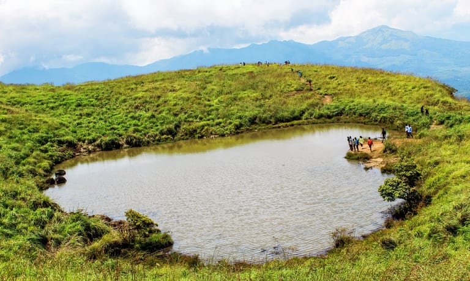

Edakkal caves

Kuruva Island

Wayanad, the green paradise is nestled among the mountains of the Western Ghats, forming the border world of the greener part of Kerala. Clean and pristine, enchanting and hypnotizing, this land is filled with history and culture. Located at a distance of 76 km. from the sea shores of Kozhikode, this verdant hill station is full of plantations, forests and wildlife. Wayanad hills are contiguous to Mudumalai in Tamil Nadu and Bandhipur in Karnataka, thus forming a vast land mass for the wild life to move about in their most natural abode.
Regarding geographical location, Wayanad district stands on the southern top of the Deccan plateau and its chief glory is the majestic Western Ghats with lofty ridges and rugged terrain interspersed with dense forest, tangled jungles and deep valleys. The place also enjoys a strategic location as the leading tourist centres of South India like Ooty, Mysore, Bangalore, Coorg and Kannur are situated around this region.
Wayanad enjoys a salubrious climate throughout the year. The mean average rain fall in this district is 2322 m.m. Lakkidi, Vythiri and Meppadi are the high rainfall areas in Wayanad. Annual rain fall in these high rain fall areas ranges from 3,000 to 4,000m.m. High velocity winds are common during the south west monsoon and dry winds blow in March-April. High altitude regions experience severe cold.
The dale Lakkidi, nestled among the hills of Vythiri taluk, has the highest average rainfall in Kerala. The misty environs of Wayanad offer a wide range of trekking opportunities, plantation visits and wildlife tours. t was at Mananthavady (35km N) that Lord Arthur Wellesley fought a guerilla war with the Pazhassi Raja and British supremacy marked the region for two centuries. When the state of Kerala was created in 1956; the southern region of Wayanad which was part of Cannannoor district was attached to Calicut district. In 1980 the Wayanad region was amalgamated out of the districts of Kannur and Kozhikode and comprised the three taluks of Mananthavady, Sultan Bathery and Vythiry.
Comprising an area of 2,132 sq. kilometres, Wayanad has a powerful history. Historians are of the view that organised human life existed in these parts, at least ten centuries before Christ. Countless evidences about New Stone Age civilisation can be seen on the hills of Wayanad. The two caves of Ampukuthimala located between Sulthan Bathery and Ambalavayal, with pictures on their walls and pictorial writings, speak volumes of the bygone era and civilisation. Recorded history of this district is available from the 18th century. In ancient times, this land was ruled by the Rajas of the Veda tribe. In later days, Wayanad came under the rule of the Pazhassi Rajahs of Kottayam royal dynasty. When Hyder Ali becames the ruler of Mysore, he invaded Wayanad and brought it under his sway. In the days of Tipu, Wayanad was restored to the Kottayam royal dynasty. But Tipu handed over the entire Malabar region to the British, after the Sreerangapattanam truce, he made with them. This was followed by fierce and internecine encounters between the British and Kerala Varma Pazhassi Rajah of Kottayam. When the Rajah was driven to the wilderness of Wayanad, he organised the war-like Kurichiya tribals into a sort of people’s militia and engaged the British in several guerrilla type encounters. In the end, the British could get only the dead body of the Rajah, who killed himself somewhere in the interior of the forest. Thus, Wayanad fell into the hands of the British and with it came a new turn in the Home of this area. The British authorities opened up the plateau for cultivation of tea and other cash crops. Roads were laid across the dangerous slopes of Wayanad, from Kozhikode and Thalassery. These roads were extended to the cities of Mysore and Ooty through Gudalur. Through the roads poured in settlers from all parts of Kerala and the virgin forest lands proved a veritable goldmine with incredible yields of cash crops. When the State of Kerala came into being in November 1956, Wayanad was part of Kannur district. Later, south Wayanad was added to Kozhikode district. In order to fulfil the aspirations of the people of Wayanad for development, north Wayanad and South Wayanad were carved out and joined together to form the present district of Wayanad. This district came into being on November 1, 1980 as the 12 district of Kerala.